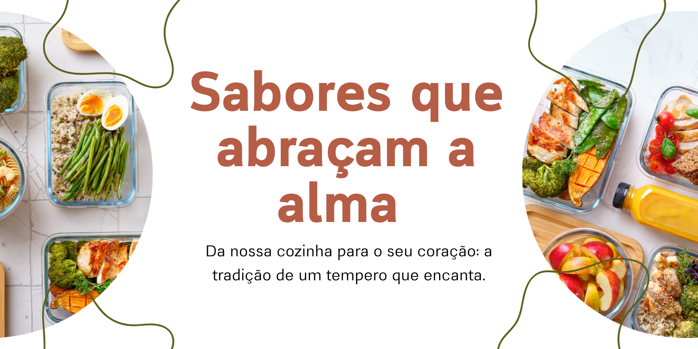
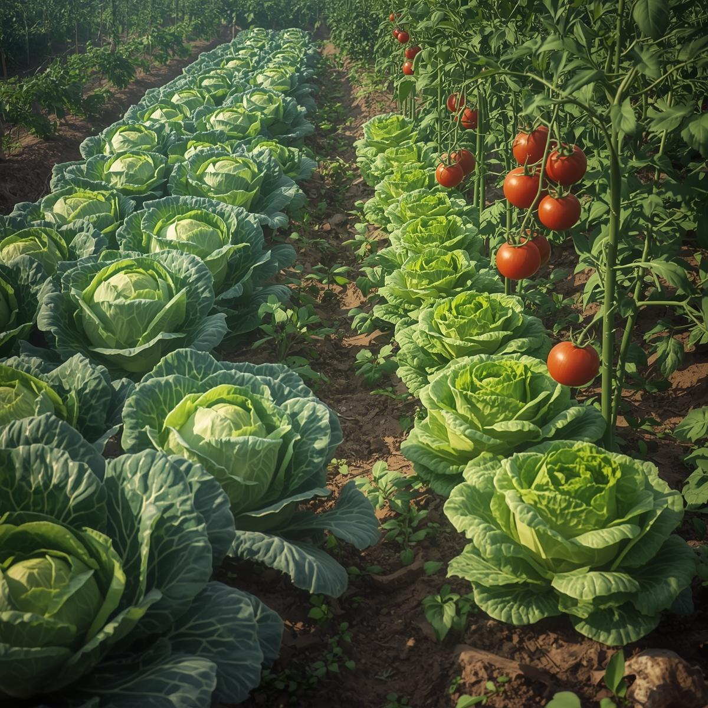
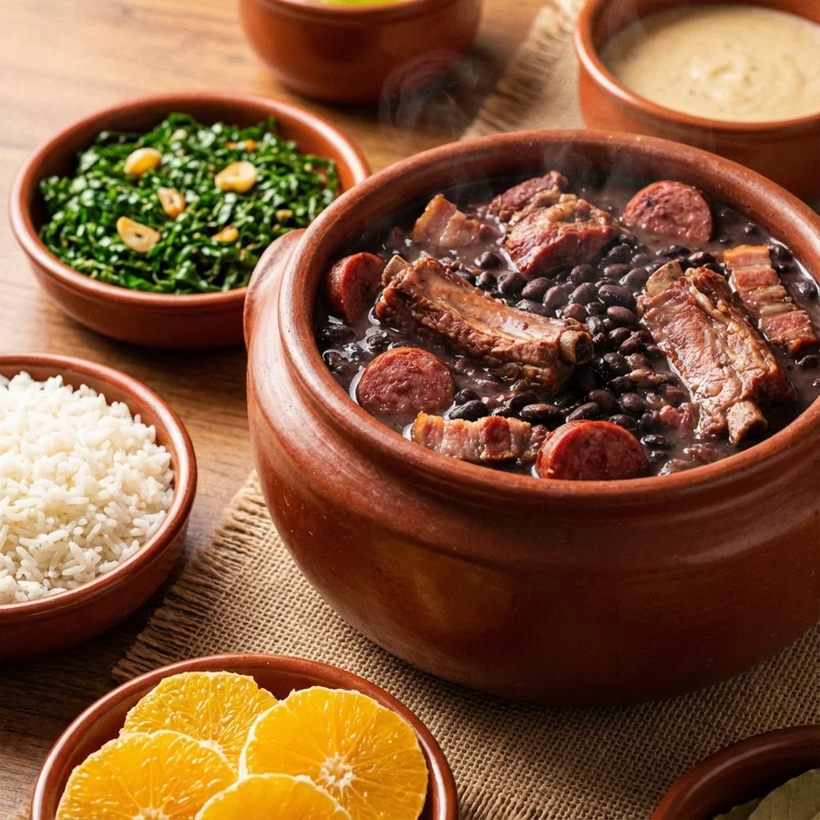
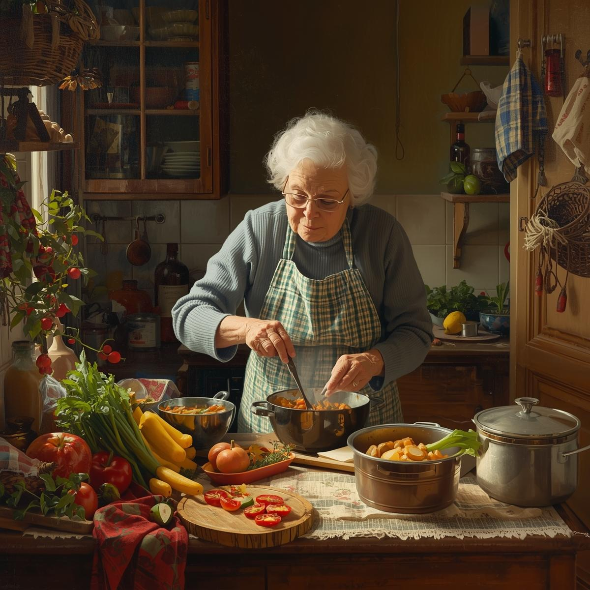

Nossa horta
No Delícias da Zezé, acreditamos que um prato especial começa na origem dos ingredientes. Por isso, cultivamos nossa própria horta, garantindo ervas sempre frescas e colhidas na hora do preparo. Sem agrotóxicos ou conservantes, levamos à sua mesa o sabor puro e vibrante da natureza.
Processo Artesanal
Aqui, o tempo é aliado do sabor. O feijão é preparado com cuidado diário: escolhido à mão e cozido lentamente com temperos naturais. Sem enlatados ou caldos prontos, cada concha traz o gosto e o carinho da comida caseira.


Tradição
A cozinha sempre foi o coração da Dona Zezé e a origem do restaurante. O Delícias da Zezé nasceu do desejo de compartilhar receitas que marcaram gerações. Mais do que um negócio, é uma casa onde cada prato expressa acolhimento, amor e história.